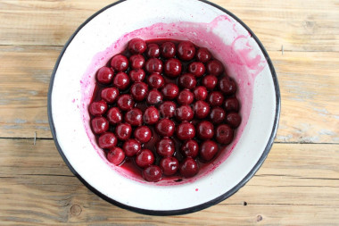

Cafe "Janis"
SASTĀVDAĻA
- 200 gr ķirši
- 150 ml sarkanvīna
- 50 gr cukura
- 11gr krējums
- 1 gab valrieksti
SOLI PA SOLIM GATAVOŠANAS RECEPTE
1 SOLIS

Sagatavojiet sastāvdaļas pēc saraksta. Ķiršus var izmantot svaigus vai saldētus, iepriekš tos atkausējot istabas temperatūrā. Vīns šādam desertam ir piemērots sarkans salds, daļēji salds vai sauss. Garšvielu komplektu var mainīt arī pēc savas gaumes. Rūpīgi kārtojiet ķiršu яг, noņemiet lapas, gružus, bojātasки. Noskalojiet ķiršus zem tekoša ūdens un izmetiet caurdurī, lai no ogām būtu ūdens.
2 SOLIS
Sagatavotās liek metāla bļodā, pievieno cukuru, šķipsniņu kanēļa, pēc garšas var pievienot pāris krustnagliņas. Pārlejiet ar sarkanvīnu.
3 SOLIS
Atstājiet vienu ēdamkaroti vīna glāzē, tas būs nepieciešams cietes izšķīdināšanai. Novietojiet ķiršu bļodu uz vidējas uguns, ļaujiet maisījumam vārīties, samaziniet siltumu līdz minimumam un vāriet vīnā 10 minūtes, nepārtraukti maisot ar karoti, lai sīrups nesāktu sadedzināt līdz trauku apakšai.
4 SOLIS
Glāzē ar atlikušo sarkanvīnu pievienojiet cieti. Visu kārtīgi samaisiet, lai ciete pilnībā izkliedētos.
5 SOLIS
Vīna maisījumu ar cieti plānā plūsmā ielej pannā ar ķiršiem un turpina vārīt vēl pāris minūtes, maisot ar karoti. Kad maisījums nedaudz sabiezē, izslēdziet siltumu. Kad deserts ir nedaudz atdzisis, izklājiet to bļodiņās vai bļodiņās. Lai deserts labāk noturētu formu un garšotu labāk (būtu mazāk skābs), labāk to atdzesēt pusstundu pirms pasniegšanas ledusskapī.
6 SOLIS

Jūs varat pasniegt šādu delikatesi svētku galdam, dekorējot ar pāris karotēm smagā krējuma, sasmalcinātiem valriekstiem vai rīvētu šokolādi. Labu apetīti!